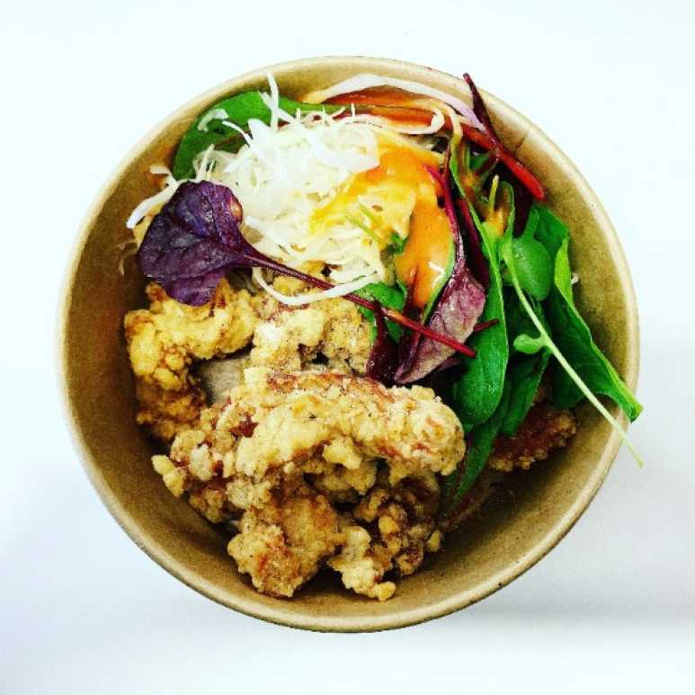

맛있는 농산물 활용한 해산물 비빔밥
2만개
1명
보통
20분
전라북도
한식
해산물
볶음
끓이기
Black, Marvin
해산물 중 으뜸으로 꼽히는 전복과 자연이 길러낸 바다 나물 해조류를 더해 바다의 풍미와 영양이 가득 담긴 비빔밥을 만들었어요~
기본 재료
2인분
전복
2개
밥
1과 1/2공기
다시마채
10g
숙주
12g
오이
1/3개
김가루
소량
고추장
2T
진간장
1/3T
설탕
1/3T
참기름
1T
물
1T
조리 도구
칼
티스푼
그릇
키친타올
도마
칫솔